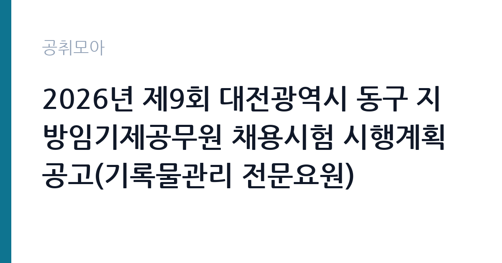

[지자체] 2026년 제9회 대전광역시 동구 지방임기제공무원 채용시험 시행계획 공고(기록물관리 전문요원)
대전광역시 동구 · 대전 · 마감 2026-10-14 (D-11) · 출처 나라일터

한눈에 보는 모집 조건
| 기관 | 대전광역시 동구 |
|---|---|
| 공고명 | 2026년 제9회 대전광역시 동구 지방임기제공무원 채용시험 시행계획 공고(기록물관리 전문요원) |
| 고용형태 | 임기제 |
| 근무지 | 대전 |
| 게시일 | 2026-10-02 |
| 마감일 | 2026-10-14 (D-11) |
지원자격, 이렇게 읽으세요
- 지방시간선택제임기제 마급 1명
- 접수 ~2026-10-14 마감
- 세부 조건은 원문 공고문 확인
기록물관리 전문요원은 법령상 자격요건이 까다로운 편입니다. 통상 기록관리학 석사학위 소지자, 기록물관리 전문요원 자격증과 실무경력 보유자 등으로 응시자격이 한정됩니다. 본 공고의 정확한 요건과 경력 인정 기준, 제출서류는 대전 동구 원문 공고문에서 확인하시기 바라며, 자격증 사본과 경력증명서는 미리 발급받아 두시기 바랍니다. 문의처는 동구 행정지원과 인사팀 042-251-4125입니다.
이 공고의 포인트
기록물관리 전문요원은 구청 기록관에서 생산되는 모든 행정기록의 수집과 분류, 보존과 평가폐기, 정보공개 업무를 총괄하는 전문가 자리입니다. 기록관리가 디지털 아카이브와 행정정보 공개 확대로 중요해지면서 지자체의 전문요원 수요는 꾸준합니다. 일반임기제는 계약기간이 정해져 있지만 보수는 직급 상당 수준으로 지급되고, 지자체 기록관 경력은 국가기록원이나 타 지자체, 공공기관 기록물관리 채용 지원 시 핵심 경력이 됩니다.
전형은 어떻게 진행되나
임기제 채용은 서류전형에서 응시자격과 경력을 심사한 뒤 면접시험으로 합격자를 정합니다. 서류에서는 자격증과 학위, 실무경력의 적합성을 보고, 면접에서는 기록관리 전문지식과 행정 이해도, 조직 적응력을 평가합니다. 접수 방법이 직접방문 또는 등기우편으로 한정되어 있으니, 우편 접수 시 마감일 도착분만 유효하다는 점을 유의하시기 바랍니다.
원문에서 확인한 전형 방식
2026년 제9회 대전광역시 동구 지방임기제공무원 채용시험 시행계획(기록물관리 전문요원)을 다음과 같이 공고하오니 참신하고 유능한 인재의 많은 응모 바랍니다. ○ 모집분야 : 기록물관리 전문요원 ○ 선발직급 : 지방행정서기(일반임기제) ○ 접수기간 : 2026년10월12일 ~ 2026년10월14일 ○ 응시방법 : 직접방문 또는 등기 우편 접수 ○ 문의처 : 대전광역시 동구 행정지원과 인사팀 042-251-4125
이런 분께 추천해요
- 기록관리학 전공자나 기록물관리 전문요원 자격 소지자
- 도서관·기록관·아카이브 실무 경험이 있는 분
- 대전 지역 정착을 희망하는 기록관리 전문가
지원 전 체크리스트
- 원문에서 응시자격(학위·자격·경력)을 확인했습니다
- 접수 기간 10월 12일부터 14일 일정에 맞춰 서류를 준비했습니다
- 등기우편 접수 시 마감일 도착 가능 여부를 계산했습니다
- 임용기간과 보수 수준을 원문에서 확인했습니다
모집 일정과 제출 타이밍
접수 기간은 2026년 10월 12일부터 10월 14일까지이며, 접수처는 대전 동구청입니다. 직접방문과 등기우편만 가능하고, 우편은 접수 마감일 도착분까지만 유효합니다. 이후 서류 합격자 발표와 면접시험이 이어지며, 세부 일정은 동구청 홈페이지 고시공고에서 확인하시기 바랍니다. 등기 접수는 추석 연휴 이후 배송 지연을 감안해 하루 먼저 발송하시기 바랍니다.
직무 이해하기: 지자체
기록물관리 전문요원은 구청 각 부서에서 생산한 기록물의 수집과 등록, 분류와 편철, 보존서고 관리, 보존기간 만료 기록의 평가와 폐기 심의를 맡습니다. 정보공개 청구가 들어오면 공개 여부를 판단하고 비공개 정보를 가려내며, 주요 기록은 디지털 아카이브로 정리합니다. 기록관리시스템 운영과 직원 대상 기록관리 교육도 담당 업무에 포함됩니다.
자기소개서 작성 팁
자기소개서에는 기록관리 실무 경험을 구체적으로 쓰시기 바랍니다. 다뤘던 기록물의 종류와 규모, 분류체계 정비나 평가폐기 심의 참여, 정보공개 처리 경험이 설득력의 핵심입니다. 행정기록이 주민의 권리와 행정의 투명성을 지킨다는 사명감을 본인 경험과 연결하면 좋습니다.
면접 준비 포인트
면접에서는 기록관리 전문지식과 행정 현장 적응력을 함께 봅니다. 보존기간 책정 기준, 평가폐기 절차, 비공개 기록 판단 같은 실무 질문과, 기록관리의 중요성을 설명하는 질문이 나옵니다. 대전 동구의 조직 규모와 기록관 현황을 파악하고 가면 준비된 인상을 줄 수 있습니다.
급여·근무조건 읽는 법
보수는 지방공무원 보수규정의 연봉한계액표가 적용되며, 정확한 연봉액과 등급은 원문 공고문에서 확인하시기 바랍니다. 참고로 8급 상당 일반임기제의 연봉한계액표상 하한액은 약 4,155만 원 수준으로 안내된 사례가 있습니다(송파구 기록물관리 임기제 공고 인용 수치). 실제 연봉은 경력 환산과 협의로 정해지며, 연봉 외 수당은 지방공무원 수당 규정에 따릅니다. 기본급 성격의 연봉과 별도 수당을 구분해 확인하시기 바랍니다.
자주 묻는 질문
- 임기제는 계약직인가요?
일반임기제공무원은 임용기간이 정해진 공무원이지만 재직 중에는 공무원 신분과 복무 규정이 적용됩니다. 임용기간과 연장 가능 여부는 원문에서 확인하시기 바랍니다. - 등기우편 접수 시 주의점은 무엇인가요?
접수 마감일 도착분까지만 유효하므로 배송 일정을 넉넉히 잡으시기 바랍니다. 봉투 겉면에 응시 분야를 적고, 등기 영수증을 보관하시기 바랍니다. - 기록물관리 자격증이 없어도 되나요?
응시자격은 공고마다 다르며 자격증과 학위, 경력 중 일정 조합을 요구하는 것이 일반적입니다. 본 공고의 정확한 요건은 원문에서 확인하시기 바랍니다.
함께 보면 좋은 공고
[지자체] 2026년 홍천군 지방공무원 경력경쟁임용시험 시행계획 — 마감 2026-10-23[지자체] 제주특별자치도 임기제공무원 임용시험 시행계획 공고(시민고충처리위원회 고충민원전문조사관 분야) — 마감 2026-10-19[지자체] 시간선택제임기제공무원[마급]보건행정 채용 공고 — 마감 2026-10-07출처: 나라일터 공개정보를 바탕으로 공취모아가 정리한 안내글입니다. 모집 조건·일정은 변경될 수 있으니 지원 전 반드시 원문 공고문을 확인하세요. 본 글은 정보 제공용이며 합격을 보장하지 않습니다.